"void_nemo" は,

の4人によって構成された 共同日常アカウントです。
グラフィックデザイン、映像、イラスト、写真、3DCG等で表現をしています。

void_nemo
In the sea of the Internet, there lies "Point
Nemo".
They seek a place to die;
they have some disorder in their hearts;
they drift to this void.
They seek a place to die;
they have some disorder in their hearts;
they drift to this void.